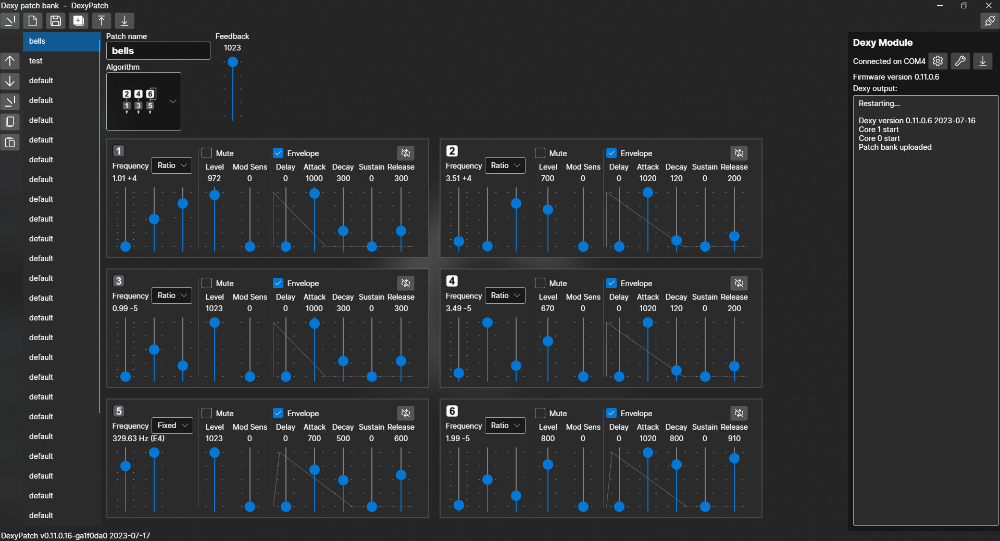

DexyPatch is a Windows application for editing patches for the Dexy FM voice module. It is open source software and is published under the MIT license. GitHub repository is here.
Features
- Patch editing for the Dexy module
- Save and load patchbank files
- USB interface to the Dexy module:
- Upload and download patchbanks
- Download firmware to the module
- Display status and debugging messages from the module
- Live patch editing – When editing a patchbank that was uploaded from the Dexy module, changes to the currently-playing patch are heard immedately
Notes
DexyPatch is written using C#, .NET, and the Avalonia UI app framework. Those components are cross-platform, but the project was built on Windows with Microsoft Visual Studio and it may contain some Windows-specific code. Some work would be needed to get it to build and run on Mac OS or Linux.
Screenshot
Tools & Libraries Used
- Avalonia UI 0.10.19
- Microsoft Visual Studio 2022 Community Edition
- Python 3.10.2
- MakeVersionInfoP
- Windows 10